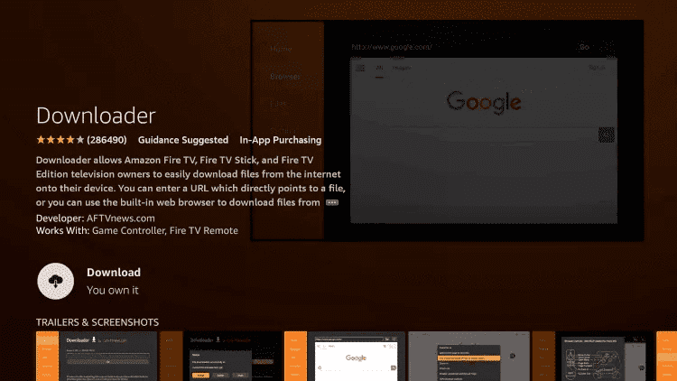

Installatie Gids
Binnen enkele minuten operationeel. Volg onze premium stap-voor-stap handleidingen om Plex Plus op elk apparaat in te stellen.
Fire TV Stick / Amazon Firestick
Downloader-app installeren
Ga naar het startscherm van je apparaat, selecteer Zoeken en typ "Downloader". Selecteer de app en klik op Downloaden/Ophalen.
Onbekende bronnen inschakelen
Ga naar Instellingen > Mijn Fire TV > Opties voor ontwikkelaars. Schakel "Apps van onbekende bronnen installeren" in en zet deze op AAN voor de Downloader-app.
IPTV Smarters downloaden
Start Downloader en typ de volgende URL: https://www.iptvsmarters.com/smarters.apk. Klik op Go en klik vervolgens op Installeren wanneer daarom wordt gevraagd.

Inloggen en streamen
Open IPTV Smarters Pro, selecteer "Login with Xtream Codes API" en voer de gebruikersnaam, het wachtwoord en de URL in die naar je e-mail zijn verzonden.
Android & iOS (Mobiel/Tablet)
De app downloaden
Zoek naar "IPTV Smarters Pro" (Android) of "Smarters Player Lite" (iOS) in de Google Play Store of App Store.
Xtream API selecteren
Open de app en kies de optie "Login with Xtream Codes API".

Je gegevens invoeren
Voer je abonnementsgegevens in. Nadat je op "ADD USER" hebt geklikt, wacht je even totdat de inhoud is gesynchroniseerd.

Smart TV (Samsung & LG)
Content Store openen
Ga naar de Samsung Smart Hub of LG Content Store en zoek naar "IPTV Smarters Pro".
Installeren en uitvoeren
Zodra de app is geïnstalleerd, open je deze en selecteer je "Login with Xtream Codes API".
Inloggen
Voer de gegevens in die je na je aankoop hebt ontvangen om te genieten van live TV in 4K.
Windows PC / Laptop
Windows-app downloaden
Download het officiële IPTV Smarters Pro uitvoerbare bestand voor Windows vanuit ons informatiecentrum.
Installatie
Voer het installatieprogramma uit en start de app vanaf je bureaublad. Selecteer Xtream Codes API login.
Abonnement toevoegen
Voer je unieke gebruikersnaam en wachtwoord in. Klik op "Add User" om direct te beginnen met kijken.
KODI-configuratie (PVR IPTV Simple Client)
Navigeren naar TV-opties
Start Kodi en selecteer "TV" in het menu aan de linkerkant.
PVR Client installeren
Selecteer "Enter Add-on Browser" en zoek "PVR IPTV Simple Client" in de lijst.
M3U-URL configureren
Klik op "Configure", ga naar het tabblad General en plak de M3U-URL die we naar je e-mail hebben gestuurd.
Laden en afspelen
Wacht tot de kanalen zijn geladen. Je hebt nu direct toegang tot alle premium content vanuit het Kodi-hoofdmenu.
MAG Box (250, 254, 256 etc.)
Systeeminstellingen openen
Ga naar Settings > System Settings > Servers > Portals.

Portaalgegevens instellen
Voer "Plex Plus" in als de portaalnaam en plak de Portal URL die in je e-mail staat.

Opnieuw opstarten en verbinden
Klik op OK om op te slaan en start je apparaat vervolgens opnieuw op. Je MAC-adres moet aan ons worden doorgegeven voor activering.